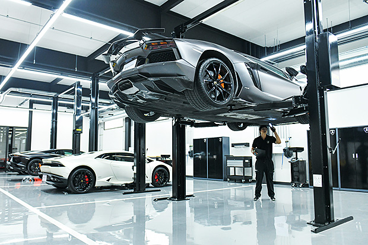
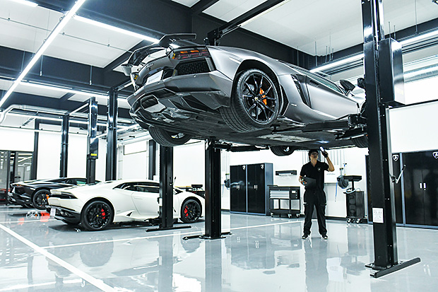

Ferrari is an Italian luxury sports car manufacturer based in Maranello, Italy. Founded by Enzo Ferrari (1898–1988) in 1939 from the Alfa Romeo racing division as Auto Avio Costruzioni, the company built its first car in 1940, and produced its first Ferrari-badged car in 1947.
Automobiles Ettore Bugatti was a German then French manufacturer of high-performance automobiles. The company was founded in 1909 in the then-German city of Molsheim, Alsace, by the Italian-born industrial designer Ettore Bugatti. The cars were known for their design beauty and for their many race victories.


Aston Martin is a modern, exclusive sports car brand with a unique heritage instantly recognised around the world. Founded in 1913 by Lionel Martin and Robert Bamford, Aston Martin is acknowledged as an iconic global brand synonymous with style, luxury, performance and exclusivity.


Automobili Lamborghini (Italian pronunciation: is an Italian manufacturer of luxury sports cars and SUVs based in Sant'Agata Bolognese. The company is owned by the Volkswagen Group through its subsidiary Audi.
 

Mercedes-Benz AG is responsible for the global business of Mercedes-Benz Cars and Mercedes-Benz Vans with over 170,000 employees worldwide. Ola Källenius is Chairman of the Board of Management of Mercedes-Benz AG. The company focuses on the development, production and sales of passenger cars, vans and services.

The special fascination of the BMW Group not only lies in its products and technology, but also in the company’s history, written by inventors, pioneers and brilliant designers. Today, the BMW Group, with more than 30 production and assembly facilities as well as a global sales network, is the world's leading manufacturer of premium automobiles and motorcycles, and provider of premium financial and mobility services.


The Range Rover is a 4x4 full-size luxury SUV produced by Land Rover, a marque and sub-brand of Jaguar Land Rover. The Range Rover line was launched in 1970 by British Leyland and is now in its fifth generation. Additional models have been launched under the Range Rover name, including the Range Rover Sport, Range Rover Evoque, and Range Rover Velar.


Rolls-Royce grew from the electrical and mechanical business established by Henry Royce in 1884. Royce built his first motor car in 1904 and in May of that year met Charles Rolls, whose company sold quality cars in London.


Maserati (Italian: [mazerati]) is an Italian luxury vehicle manufacturer. Established on 1 December 1914, in Bologna, Italy,[4] the company's headquarters are now in Modena, and its emblem is a trident. The company has been owned by Stellantis since 2021. Maserati was initially associated with Ferrari. In May 2014, due to ambitious plans and product launches, Maserati sold a record of over 3,000 cars in one month. This caused them to increase production of the Quattroporte and Ghibli models. In addition to the Ghibli and Quattroporte, Maserati offers the Maserati GranTurismo and the Maserati Levante (the first ever Maserati SUV). Maserati has placed a yearly production output cap at 75,000 vehicles globally.